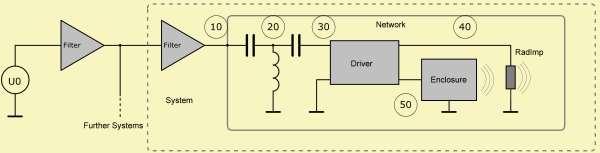

Each System encapsulate a flow-network,
which is a discrete from of Potential Analysis.
For example take two points of different potential, U1 and U2 and you will get a flow.
Between two points of identical potential the flow will be zero.
Each System encapsulate a flow-network,
which is a discrete from of Potential Analysis.
For example take two points of different potential, U1 and U2 and you will get a flow.
Between two points of identical potential the flow will be zero.See also Systems and Components.

Each System encapsulate a flow-network,
which is a discrete from of Potential Analysis.
For example take two points of different potential, U1 and U2 and you will get a flow.
Between two points of identical potential the flow will be zero.
The product of potential and flow yields the power P = 1/2·pot·flow' assuming sinoidal peak-values and flow’ means conjugate complex.
The network is formed by branches which are spanned between so-called nodes. Each branch is is a connecting Component.
ABEC assumes linearity of all components.
In ABEC each network can be driven only at one Node by an ideal potentials source, for example, a voltage source. This source is either the output of the Filter-bank, which is switched in front of the network or the global source (Def_Driving).
The driving Node is identified simply by having the smallest Node-Index. In the above picture it is Node=10. See also at parameter Node=.
By default the source is a potential source, for example a voltage source, with zero generator resistance.
If you need a flow source the trick is to use the Gyrator as a converter.
Section LE_Spectrum of the spectral observation script provides parameters to specify a certain potential across terminals or a particular flow into an element.
For example, in order to observe the (acoustic) driving point impedance of the above circuit and the pressure response at the Duct-ports we specify:
Control_Spectrum
f1=20; f2=20kHz; NumFrequencies=200; Abscissa=log
ID=CurrentSource
LE_Spectrum
AnalysisType=Impedance
101 System=S1 ID=101
LE_Spectrum
AnalysisType=Pressure
101 System=S1 ElName='D1' Port=1 ID=201
102 System=S1 ElName='D1' Port=2 ID=202